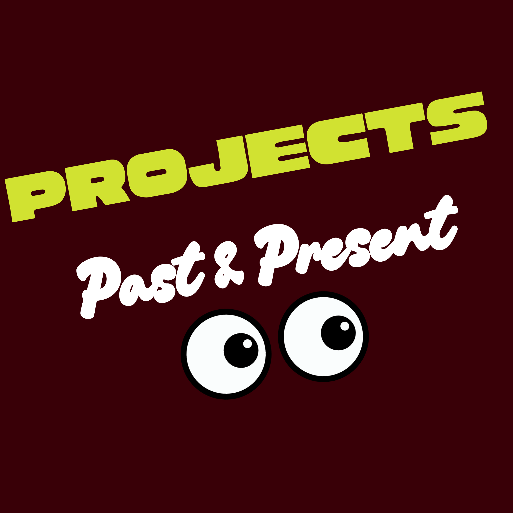

Sample:Information Organization Visit Report
Sample:Case Study
Sample:Social Justice in the News
Sample: This Portfolio
Sample:Archives Literature Review
Sample:Case Study: Appraisal
Sample:Environment Observation
Sample:Repository Analysis
Sample:Library Program Proposal
Sample:Information Behaviors
Sample:Digital Library Plan
Sample:CDWA Metadata Matrix
Sample:Information Literacy Pamphlet
I currently manage the Medical Student Research Database, which entails managing listings of medical researchers projects and researchers who are looking for students to assist with research. The database is very rudimentary and operates much like an excel spreadsheet making it hard for students to search and parse through information. I'm currently working with the Assistant Dean of Medical Student Research to pinpoint our exact database needs because we've received funding to purchased a third-party database.
During my time as a Learning Specialist for the Nursing and Allied Health Campus at South Texas College, I was tasked with helping to develop a writing center that met the needs of students in the Allied Health programs. I met with faculty, staff, and writing tutors to identify gaps in writing skills and developed resources like guides, handouts, and presentations to fill those gaps. One of my most popular guides was an APA 7th Ed. Cheat Sheet.
Because of Covid in 2020, the writing center was forced to expedite their transition to an online platform, and I was tasked with assisting in the development of the procedures and workflows for how tutors would coordinate to manage the writing queue of student submitted papers by topic and campus. I also editing an old interally developed manual that provided writing tutors with prompts by topic to help quickly provide feedback to students based on their specific writing needs to speed up the feedback process.